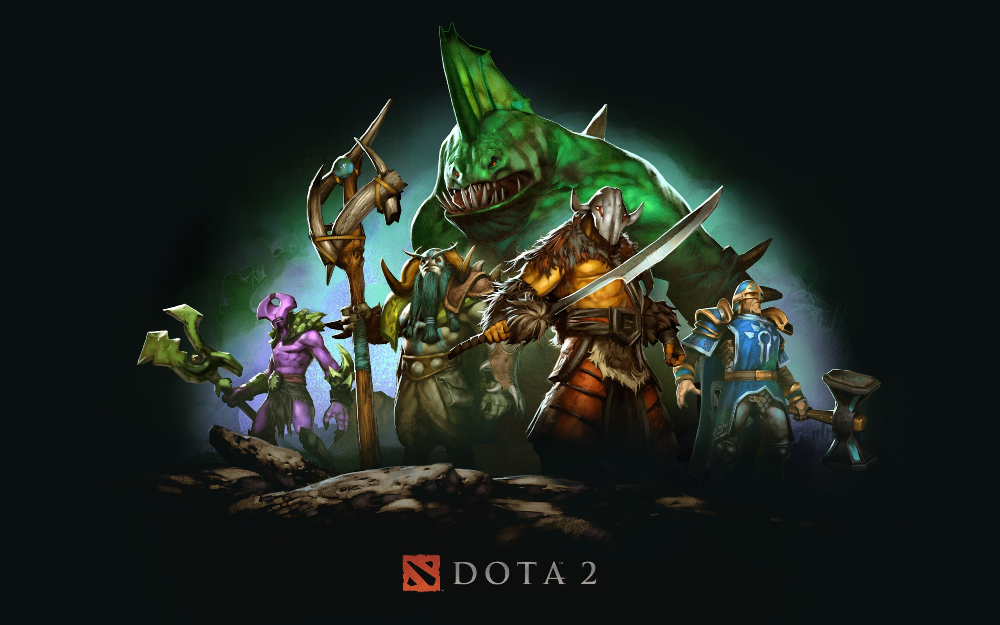
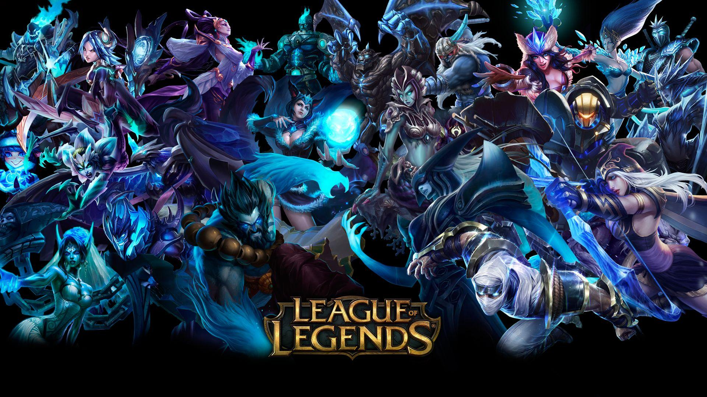

Dota 2 es un videojuego de estrategia en tiempo
real multijugador en línea (MOBA) desarrollado por Valve Corporation.
Los jugadores eligen héroes con habilidades únicas y compiten en equipos
para destruir la base enemiga. Es conocido por su profundidad estratégica y
su gran comunidad global.

League of Legends (LoL) es un videojuego de
estrategia en tiempo real multijugador en línea (MOBA) desarrollado por
Riot Games. Los jugadores eligen campeones con habilidades únicas y trabajan
en equipo para destruir la base enemiga. Es famoso por su competitividad,
profundidad estratégica y enorme base de jugadores a nivel mundial.

Dota 2 y League of Legends (LoL) son videojuegos
MOBA donde los jugadores eligen héroes/campeones con habilidades únicas para
destruir la base enemiga. Dota 2 destaca por su complejidad estratégica,
mientras que LoL es conocido por su accesibilidad y enorme base de jugadores
global.